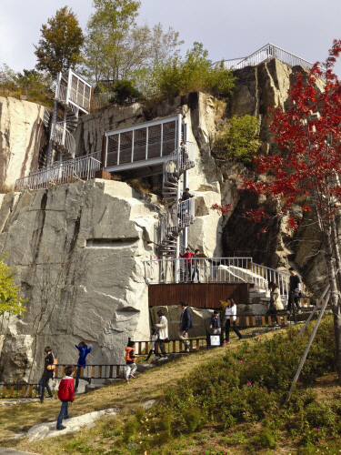
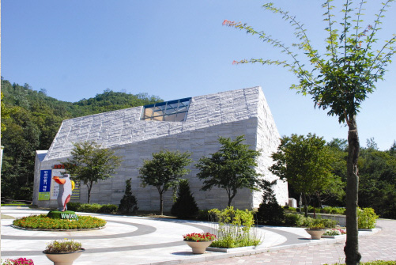
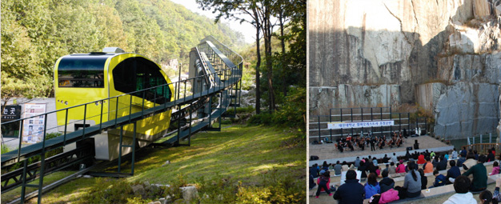

♬ 주변 볼거리, 놀거리 ♬
★아트 밸리★



[아트 밸리]
포천 아트밸리는 1960년대 후반에 주요 건축물 등에 사용하기 위하여 화강암을 채석하던
곳으로 채석시에 발생하는 소음과 먼지로 인하여 인근 주민들에게 많은 불편과 피해를 주던 곳을
문화예술공간으로 재탄생시키기 위한 노력을 기울인 끝에 2009년 10월에 포천아트밸리를 준공하게
되었습니다.
폐채석장에서 문화예술공간으로 재탄생한 포천아트밸리에서는 화강암 직벽을 활영한
영화상영 및 고연과 전시관을 통한 기획 및 상설 전시, 호수를 배경으로 한 수상퍼포먼스 등 독특한
문화예술 콘텐츠가 년중 운영될 것입니다.
★ 아트 밸리 가는법
주소 : 경기도 포천시 신북면 아트밸리로 234
☆ 시내버스 : 의정부 전철역 4,5번출구(139번 139-5번 138-6번 138-7번) → 송우리 → 대진대 → 포천시청 →
신북면사무소(73번 환승)
☆ 시외버스 : 동서울터미널(3000번 3001번 3002번) → 포천터미널 → 신북면 사무소(73번 환승)
수유리(3003번 3005번) → 포천터미널 → 신북면사무소(73번 환승)
☆ 자동차로 오실때☆
☆고속도로 이용 : 구리/포천간 고속도로 → 신북IC → 신북면사무소 사거리에서 우회전 후 아트밸리 표지판을 보시고
오시면 됩니다.
★아트밸리 사이트 첨부[클릭]★